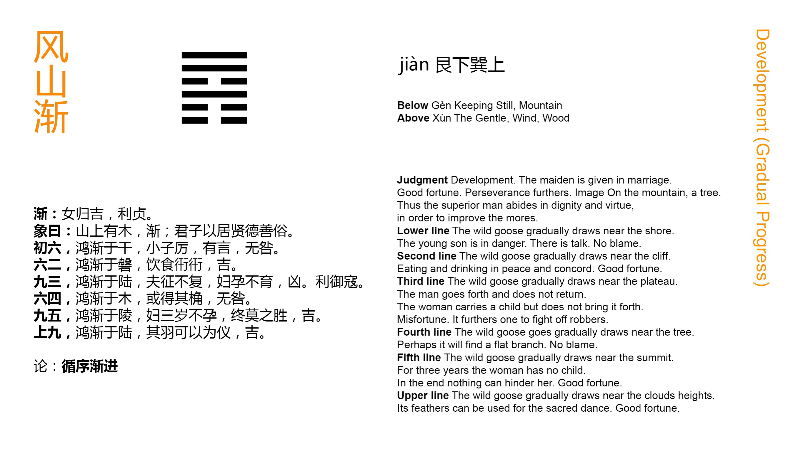

Chinese: 渐 ䷴ jiàn

Jiàn ䷴ suggests to us the marriage of a young lady, and the good fortune (attending it). There will be advantage in being firm and correct.
1. The first SIX, divided, shows the wild geese gradually approaching the shore. A young officer (in similar circumstances) will be in a position of danger, and be spoken against; but there will be no error.
䷴ changing to ䷤
Matching Line 1 in Adjacent Hexagram: ䷵
2. The second SIX, divided, shows the geese gradually approaching the large rocks, where they eat and drink joyfully and at ease. There will be good fortune.
䷴ changing to ䷸
Matching Line 2 in Adjacent Hexagram: ䷵
3. The third NINE, undivided, shows them gradually advanced to the dry plains. (It suggests also the idea of) a husband who goes on an expedition from which he does not return, and of a wife who is pregnant, but will not nourish her child. There will be evil. (The case symbolised) might be advantageous in resisting plunderers.
䷴ changing to ䷓
Matching Line 3 in Adjacent Hexagram: ䷵
4. The fourth SIX, divided, shows the geese gradually advanced to the trees. They may light on the flat branches. There will be no error.
䷴ changing to ䷠
Matching Line 4 in Adjacent Hexagram: ䷵
5. The fifth NINE, undivided, shows the geese gradually advanced to the high mound. (It suggests the idea of) a wife who for three years does not become pregnant; but in the end the natural issue cannot be prevented. There will be good fortune.
䷴ changing to ䷳
Matching Line 5 in Adjacent Hexagram: ䷵
6. The sixth NINE, undivided, shows the geese gradually advanced to the large heights (beyond). Their feathers can be used as ornaments. There will be good fortune.
䷴ changing to ䷦
Matching Line 6 in Adjacent Hexagram: ䷵
Jiàn ䷴ is ordinarily used in the sense of gradually; but there is connected with that the idea also of progress or advance. The element of meaning in the character is the symbol of water; and the whole of it denotes gradual advance, like the soaking in of water. Three hexagrams contain in them the idea of advance, Jìn ䷢, Shēng ䷭, and this Jiàn ䷴; but each has its peculiarity of meaning, and that of Jiàn ䷴ is the gradual manner in which the advance takes place. The subject then of the hexagram is the advance of men to offices in the state, how it should take place gradually and by successive steps, as well as on certain other conditions that may be gathered from the Text. P. Regis gives this exposition of the subject, as taken by him from the symbolism, which he ascribes to Confucius: -- 'The men of the well-disposed, that is, the state they deserve, need to be trained in the are of the power of a bodily substance from the wise, and the useful for strengthening the rules of the roots as in the deep, nor any other has view to the advantage to be treated in the promotion of, the government of this, but he who is a great stepping-stone to the risk of being done little by little to come up through the various and smaller they are worthy of.' He then illustrates this sentiment by the words of Pliny: -- 'It will be chosen many experiences, learned man, and from the past, who are able to foresee the future.'
But how does the lineal figure give the idea of a gradual advance? We shall see how it is attempted in the Great Symbolism to get this from the component trigrams. The account there is not satisfactory; and still less so is what else I have been able to find on the subject. E. g., the trigrams were originally Kūn ☷ and Qián ☰; but the third line of Kūn ☷ and the first of Qián ☰ have changed places ( ䷋ -> ䷴ ); and the trigrams now denote 'the youngest son,' and 'the eldest daughter.' If all this, which is a mere farrago, were admitted, it would not help us to the idea of an advance.
Again, the lines 2, 3, 4, 5 are all in the places proper to them as strong or weak; we ascend by them as by regular steps to the top of the hexagram; and this, it is said, gives the notion of the gradual steps of the advance. But neither does this carry conviction with it to the mind. We must leave the question. king Wén, for reasons which we cannot discover, or without such reasons, determined that the hexagram Jiàn ䷴ should denote the gradual advance of men to positions of influence and office.
The marriage of a young lady is mentioned in the Tuàn as an illustration of an important event taking place with various preliminary steps, continued from its initiation to its consummation. But all must he done in an orderly and correct manner. And so must it be with the rise of a man in the service of the state.
The goose from the most ancient times played an important part in the marriage ceremonies of the Chinese; and this may have suggested the use of it in the symbolism of the different lines. Its habits as a bird of passage, and flying in processional order, admirably suited the writer's purpose. In paragraph 1 it appears for the first time in the season approaching the shore. Then comes the real subject of the line; and the facts of its being weak, and without a proper correlate, agree with, if they do not suggest, what is said about him, and the caution added.
The geese have advanced in line 2, and so has the officer, though he is not mentioned. The line is weak or humble, and central, and has a proper correlate in 5. Hence comes the good auspice.
Line 3 is strong, and has passed the central place, to the top of the lower trigram ☶, and has not a proper correlate in 6. Its subject is likely to be violent and at the same time unsuccessful in his movements. He is like a husband who does not care for his wife, or a wife who does not care for her child. But in the case supposed, his strength in the end would be useful.
The web-footed goose is not suited for taking hold on the branches; but on flat branches it can rest. Line 4, weak, but in an even place, does not promise a good auspice for its subject; but it is the first line in the trigram of humility ☴, and it is concluded that he will not fall into error.
Line 5 is a strong line in the ruler's seat; and yet it appears here as the symbol of a wife. Somehow its subject has been at variance with, and kept in disgrace by, calumniating enemies such as the plunderers of paragraph 3; but things come right in the end. The wife, childless for three years, becomes at last a mother; and there is good fortune.
The subject of line 6 has reached the top of the hexagram. There is no more advance for him; and he has no correlate. But he may still do some good work for the state, and verify the auspice derived from the ornamental plumes of the geese.